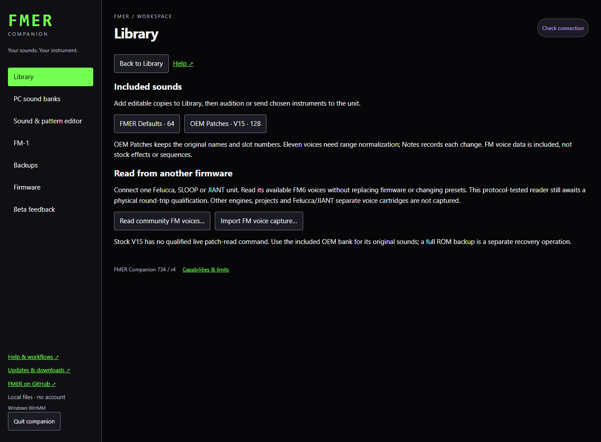

Companion
OEM & community sounds
Included sound packs, FM6 readback, file exchange and firmware compatibility.
Included sounds
Open Library / Included & community sounds. Choose FMER Defaults - 64 or OEM Patches - V15 - 128, review and confirm. This adds editable catalog copies, preserving PC banks and the connected unit. The included Libraries folder also contains both catalogs for offline file import. A complete repeated import is detected; a partial match asks before creating duplicates.
OEM Patches contains all 128 original names and slots from the licensed public Original V15 recovery resource. Its two source bank copies are identical and match the archived stock bank inspected during development. Slot numbers are 1-128. Eleven slots (23, 36, 47, 77, 85, 110, 115, 116, 117, 120, 124) need standard DX7 range normalization; Notes lists original and imported values. Original packed data and Apache-2.0 notices are included in third_party/oem_v15. These are separate from the 64 GPL-licensed FMER defaults. Stock effects and sequences are not included; playback may differ.
Use a sound
- Filter Library to OEM Patches - V15 or FMER Defaults.
- Select a sound and open the editor to audition it.
- Rename its instrument name if desired; Library titles can be longer.
- Choose Send selected to unit, review the exact destination slots, and confirm. The normal FMER backup and transfer checks apply.
Read community FM voices without replacing firmware
Connect one supported community unit, close other MIDI apps, and choose Read community FM voices from Included & community sounds. Leave its controls untouched. The reader checks the identity and editor INFO capabilities, reads each available FM6 voice twice, and retains a checksum-protected original capture. Download that capture, then review the local Library import. No patch selection, playback, flash or erase commands are sent.
This reader has protocol simulation and real FM-codec coverage; physical community-firmware capture is still pending. A timeout or inconsistent read fails the operation without importing a partial catalog. Logs remain available through Export operation record. Import FM voice capture can reopen a previously saved capture offline.
| Firmware | Available capture scope | Not included |
|---|---|---|
| Felucca 1.6.1 / reviewed JIANT FM6 family | Eight factory FM6 voices, four track FM6 snapshots, available FM6 user-preset voices | Separate 32-voice cartridge, other engines, FX, native projects/settings |
| SLOOP 2.7.1 (protocol 9-12) | Eight factory FM6 voices, up to 27 bank voices, three synth-track FM6 snapshots | Drums, other engines, FX and native projects/settings |
| Original V15 | Included OEM bank; existing standard DX7 files | No qualified live bank-read command or native-settings exporter |
| FMER 733/734/735 | Normal complete FMER backup, instruments and projects | Use the FM-1 and Backups pages, not the community reader |
A stored FM6 snapshot on a non-FM track may not be the sound currently heard. Duplicate sounds at distinct source slots are retained with provenance. This is an FM voice capture, not a complete recovery backup; retain the other firmware’s own native backups separately.
Standard file exchange
Felucca, SLOOP and JIANT FM6 editors exchange standard DX7 .syx voices and 32-voice banks with FMER. Import DX7 FM and Export DX7 FM retain FM parameters; VA, FX, songs and samples are not translated. Catalogs assembled from other authors’ instruments retain their rights and attribution.
Firmware switching
FMER is the primary installation and management target. Supported original-device V15 application recovery is next; it requires a compatible user-supplied backup. The separately published V15 image uses a larger app slot and is not an interchangeable recovery file. Companion recognizes pinned Felucca, SLOOP, JIANT, X0X, Open V14 and Baud102 files but does not install their different layouts. A recognized filename or version is not a passed migration test.
Those transitions still require a migration updater, native backup/restore and verified return to FMER. Saved-data regions overlap; blindly installing another firmware can damage saved music even if the update itself succeeds. Use the publisher’s installer and native backup instructions until an exact transition is qualified. No force-flash option is provided.
